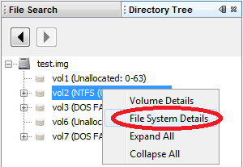
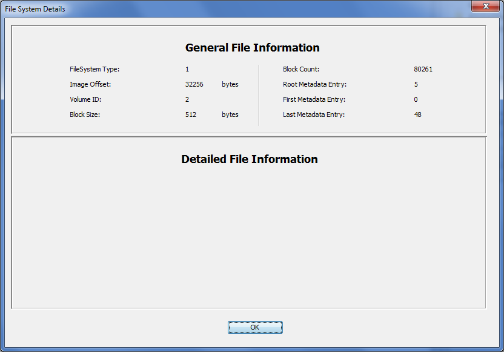

The File System Details indow shows you the general information about a file system in the disk image. You can open the window by by right clicking on a file system and choosing "File System Details".

There are two sections to this window: General and Detailed. The general information section has data associated with all types of file systems, such as its type, starting location, number of blocks, etc. The detailed section has information that is specific to the type of file system. Some file systems will have more data here than others.
An example is shown here:
